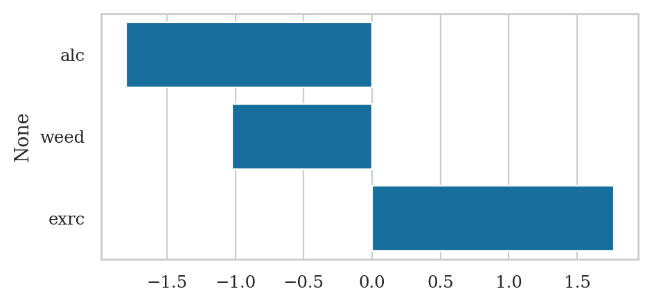
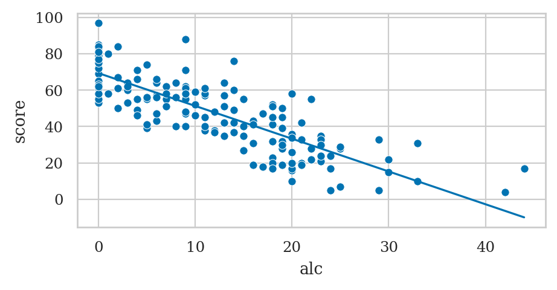
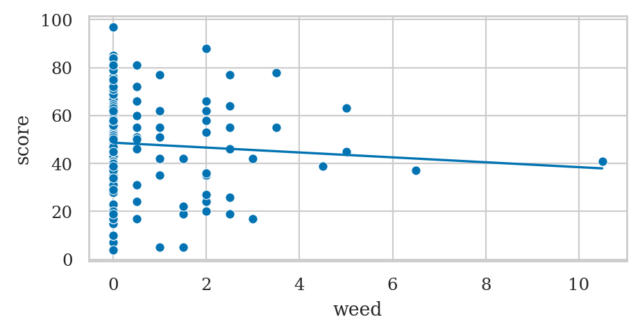
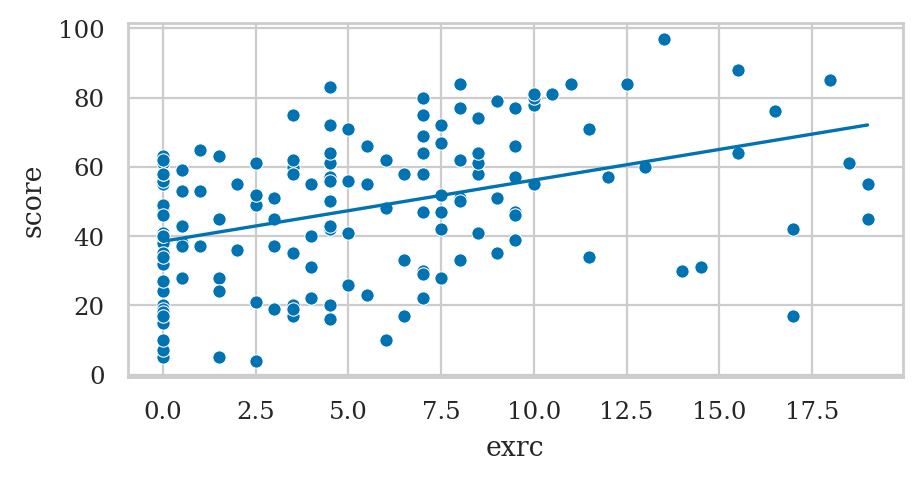
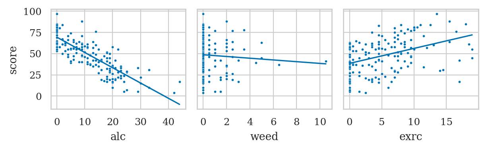
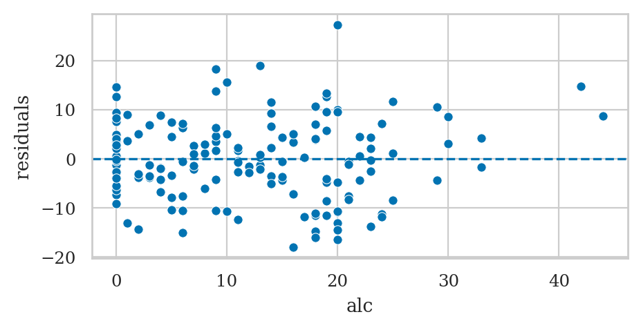
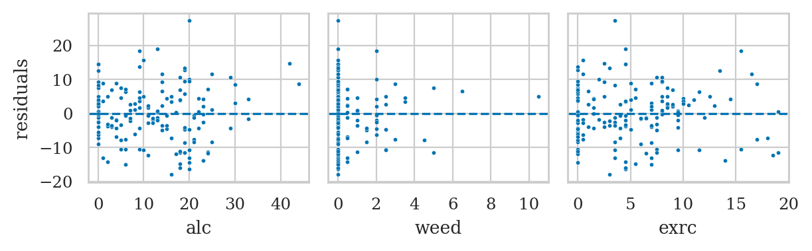
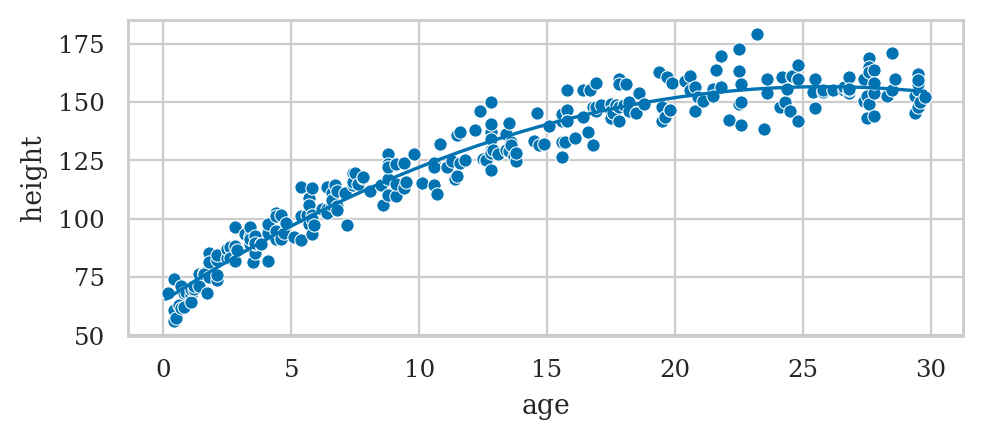
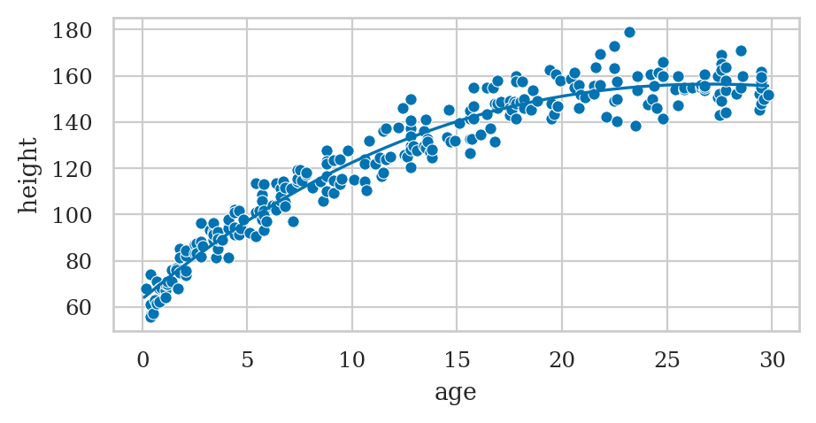

Section 4.2 — Multiple linear regression#
This notebook contains the code examples from Section 4.2 Multiple linear regression from the No Bullshit Guide to Statistics.
Notebook setup#
# load Python modules
import os
import numpy as np
import pandas as pd
import seaborn as sns
import matplotlib.pyplot as plt
# Figures setup
plt.clf() # needed otherwise `sns.set_theme` doesn't work
from plot_helpers import RCPARAMS
# RCPARAMS.update({"figure.figsize": (10, 4)}) # good for screen
RCPARAMS.update({"figure.figsize": (5, 2.3)}) # good for print
sns.set_theme(
context="paper",
style="whitegrid",
palette="colorblind",
rc=RCPARAMS,
)
# High-resolution please
%config InlineBackend.figure_format = "retina"
# Where to store figures
DESTDIR = "figures/lm/multiple"
<Figure size 640x480 with 0 Axes>
from ministats.utils import savefigure
# set random seed for repeatability
np.random.seed(42)
#######################################################
Definitions#
Doctors dataset#
doctors = pd.read_csv("../datasets/doctors.csv")
doctors.shape
(156, 12)
doctors.head()
| permit | name | loc | work | age | exp | hours | caf | alc | weed | exrc | score | |
|---|---|---|---|---|---|---|---|---|---|---|---|---|
| 0 | 93273 | Robert Snyder | rur | hos | 26 | 2 | 21 | 2 | 0 | 5.0 | 0.0 | 63 |
| 1 | 90852 | David Barnett | urb | cli | 43 | 11 | 74 | 26 | 20 | 0.0 | 4.5 | 16 |
| 2 | 92744 | Wesley Sanchez | urb | hos | 30 | 1 | 63 | 25 | 1 | 0.0 | 7.0 | 58 |
| 3 | 73553 | Anna Griffin | urb | eld | 53 | 23 | 77 | 36 | 4 | 0.0 | 2.0 | 55 |
| 4 | 82441 | Tiffany Richard | rur | cli | 26 | 3 | 36 | 22 | 9 | 0.0 | 7.5 | 47 |
# doctors.columns
# cols = ["loc", "work", "age", "exp", "hours", "caf", "alc", "weed", "exrc", "score"]
# print("skipping columns", set(doctors.columns) - set(cols))
# docs = doctors[cols]
# lines = str(docs.head()).splitlines()
# for i, line in enumerate(lines):
# print(line.replace(" ", " ", 1))
Multiple linear regression model#
\(\newcommand{\Err}{ {\Large \varepsilon}}\)
\[
Y = \beta_0 + \beta_1 x_1 + \beta_2 x_2 + \cdots + \beta_p x_p + \Err,
\]
where \(p\) is the number of predictors and \(\Err\) represents Gaussian noise \(\Err \sim \mathcal{N}(0,\sigma)\).
Model assumptions#
TODO: add model assumptions
Example: linear model for doctors’ sleep scores#
We want to know the influence of drinking alcohol, smoking weed, and exercise on sleep score?
import statsmodels.formula.api as smf
formula = "score ~ 1 + alc + weed + exrc"
lm2 = smf.ols(formula, data=doctors).fit()
lm2.params
Intercept 60.452901
alc -1.800101
weed -1.021552
exrc 1.768289
dtype: float64
sns.barplot(x=lm2.params.values[1:],
y=lm2.params.index[1:]);

Partial regression plots#
Partial regression plot for the predictor alc#
b0, b_alc, b_weed, b_exrc = lm2.params
avg_weed = doctors["weed"].mean()
avg_exrc = doctors["exrc"].mean()
avg_weed, avg_exrc
(0.6282051282051282, 5.387820512820513)
int_alc = b0 + b_weed*avg_weed + b_exrc*avg_exrc
int_alc
69.33837903371314
alcs = np.linspace(0, doctors["alc"].max())
scorehats_alc = int_alc + b_alc*alcs
sns.lineplot(x=alcs, y=scorehats_alc)
sns.scatterplot(data=doctors, x="alc", y="score");

Partial regression plot for the predictor weed#
from ministats import plot_lm_partial
plot_lm_partial(lm2, "weed")
sns.scatterplot(data=doctors, x="weed", y="score");
weed intercept= 48.667385017001344 slope= -1.021551659716443

Partial regression plot for the predictor exrc#
plot_lm_partial(lm2, "exrc")
sns.scatterplot(data=doctors, x="exrc", y="score");
exrc intercept= 38.4984185910091 slope= 1.7682887564575607

# leave simplified version after split to figures only
from ministats import plot_lm_partial
with plt.rc_context({"figure.figsize":(6.2,2)}):
fig, (ax1,ax2,ax3) = plt.subplots(1,3, sharey=True)
# alc
sns.scatterplot(data=doctors, x="alc", y="score", s=5, ax=ax1)
ax1.set_xticks([0,10,20,30,40])
plot_lm_partial(lm2, "alc", ax=ax1)
# weed
sns.scatterplot(data=doctors, x="weed", y="score", s=5, ax=ax2)
ax2.set_xticks([0,2,4,6,8,10])
plot_lm_partial(lm2, "weed", ax=ax2)
# exrc
sns.scatterplot(data=doctors, x="exrc", y="score", s=5, ax=ax3)
ax3.set_xticks([0,5,10,15,20])
plot_lm_partial(lm2, "exrc", ax=ax3)
filename = os.path.join(DESTDIR, "prediction_score_vs_alc_weed_exrc.pdf")
savefigure(plt.gcf(), filename)
alc intercept= 69.33837903371314 slope= -1.8001013152459402
weed intercept= 48.667385017001344 slope= -1.021551659716443
exrc intercept= 38.4984185910091 slope= 1.7682887564575607
Saved figure to figures/lm/multiple/prediction_score_vs_alc_weed_exrc.pdf
Saved figure to figures/lm/multiple/prediction_score_vs_alc_weed_exrc.png

Plot residuals#
ax = sns.scatterplot(x=doctors["alc"], y=lm2.resid)
ax.axhline(y=0, color="b", linestyle="dashed")
ax.set_ylabel("residuals");

# leave simplified version after split to figures only
with plt.rc_context({"figure.figsize":(6.2,2)}):
fig, (ax1,ax2,ax3) = plt.subplots(1, 3, sharey=True)
ax1.set_ylabel("residuals")
# residuals vs. alc
sns.scatterplot(x=doctors["alc"], y=lm2.resid, s=5, ax=ax1)
ax1.set_xticks([0,10,20,30,40])
ax1.axhline(y=0, color="b", linestyle="dashed")
# residuals vs. weed
sns.scatterplot(x=doctors["weed"], y=lm2.resid, s=5, ax=ax2)
ax2.set_xticks([0,2,4,6,8,10])
ax2.axhline(y=0, color="b", linestyle="dashed")
# residuals vs. exrc
sns.scatterplot(x=doctors["exrc"], y=lm2.resid, s=5, ax=ax3)
ax3.set_xticks([0,5,10,15,20])
ax3.axhline(y=0, color="b", linestyle="dashed")
filename = os.path.join(DESTDIR, "residuals_vs_alc_weed_exrc.pdf")
savefigure(plt.gcf(), filename)
Saved figure to figures/lm/multiple/residuals_vs_alc_weed_exrc.pdf
Saved figure to figures/lm/multiple/residuals_vs_alc_weed_exrc.png

Model summary table#
from IPython.core.display import HTML
HTML(lm2.summary().as_html())
| Dep. Variable: | score | R-squared: | 0.842 |
|---|---|---|---|
| Model: | OLS | Adj. R-squared: | 0.839 |
| Method: | Least Squares | F-statistic: | 270.3 |
| Date: | Wed, 22 May 2024 | Prob (F-statistic): | 1.05e-60 |
| Time: | 12:29:36 | Log-Likelihood: | -547.63 |
| No. Observations: | 156 | AIC: | 1103. |
| Df Residuals: | 152 | BIC: | 1115. |
| Df Model: | 3 | ||
| Covariance Type: | nonrobust |
| coef | std err | t | P>|t| | [0.025 | 0.975] | |
|---|---|---|---|---|---|---|
| Intercept | 60.4529 | 1.289 | 46.885 | 0.000 | 57.905 | 63.000 |
| alc | -1.8001 | 0.070 | -25.726 | 0.000 | -1.938 | -1.662 |
| weed | -1.0216 | 0.476 | -2.145 | 0.034 | -1.962 | -0.081 |
| exrc | 1.7683 | 0.138 | 12.809 | 0.000 | 1.496 | 2.041 |
| Omnibus: | 1.140 | Durbin-Watson: | 1.828 |
|---|---|---|---|
| Prob(Omnibus): | 0.565 | Jarque-Bera (JB): | 0.900 |
| Skew: | 0.182 | Prob(JB): | 0.638 |
| Kurtosis: | 3.075 | Cond. No. | 31.2 |
Notes:
[1] Standard Errors assume that the covariance matrix of the errors is correctly specified.
#######################################################
Explanations#
Non-linear terms in linear regression#
Example: polynomial regression#
howell30 = pd.read_csv("../datasets/howell30.csv")
len(howell30)
270
# Fit quadratic model
formula2 = "height ~ 1 + age + np.square(age)"
lmq = smf.ols(formula2, data=howell30).fit()
lmq.params
Intercept 64.708568
age 7.100854
np.square(age) -0.137302
dtype: float64
# Plot the data
sns.scatterplot(data=howell30, x="age", y="height");
# Plot the best-fit quadratic model
intercept, b_lin, b_quad = lmq.params
ages = np.linspace(0.1, howell30["age"].max())
heighthats = intercept + b_lin*ages + b_quad*ages**2
sns.lineplot(x=ages, y=heighthats, color="b");
filename = os.path.join(DESTDIR, "howell_quadratic_fit_height_vs_age.pdf")
savefigure(plt.gcf(), filename)
Saved figure to figures/lm/multiple/howell_quadratic_fit_height_vs_age.pdf
Saved figure to figures/lm/multiple/howell_quadratic_fit_height_vs_age.png

Feature engineering and transformed variables#
Example of polynomial regression up to degree 3#
formula3 = "height ~ 1 + age + np.power(age,2) + np.power(age,3)"
exlm3 = smf.ols(formula3, data=howell30).fit()
exlm3.params
Intercept 63.461484
age 7.636139
np.power(age, 2) -0.183218
np.power(age, 3) 0.001033
dtype: float64
sns.scatterplot(data=howell30, x="age", y="height")
sns.lineplot(x=ages, y=exlm3.predict({"age":ages}));

Example including square root and logarithmic terms#
formula4 = "height ~ 1 + age + np.sqrt(age) + np.log(age)"
exlm4 = smf.ols(formula4, data=howell30).fit()
exlm4.params
Intercept 2.399852
age -5.190301
np.sqrt(age) 70.356734
np.log(age) -21.400073
dtype: float64
sns.scatterplot(data=howell30, x="age", y="height")
sns.lineplot(x=ages, y=exlm4.predict({"age":ages}));